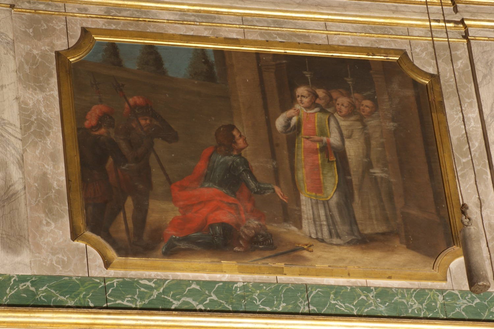

Guillem de Malavalle (s. XII), també anomenat sant Guillem el Gran, va ser un anacoreta que inspirà la fundació de l’orde dels Eremites de Sant Guillem. Segons una tradició medieval (que probablement el confon amb sant Guillem de Gellone, duc d’Aquitània i comte de Tolosa dels segles VIII-IX, que renuncià a la vida militar per retirar-se a la vida monàstica) va ser un cavaller de la família ducal d’Aquitània que, per la seva vida dissoluta, fou excomunicat pel papa Eugeni III. Convertit per sant Bernat de Claravall, pelegrinà a Jerusalem, Roma i Santiago de Compostel·la i, en tornar, es retirà a la vida eremítica.
Aquesta pintura representa el moment de la conversió de sant Guillem per sant Bernat, però mesclant-lo amb la iconografia de la renúncia de Guillem d’Aquitània a la vida militar per abraçar la vida religiosa, simbolitzada pel casc i l’espasa a terra i per l’actitud d’estorament dels soldats.
Cal dir que la identificació tradicional d'aquesta pintura a la parròquia és la de “sant Guillem duc de Gandia”; emperò, no s'ha pogut documentar l'existència de cap sant amb aquest nom, per la qual cosa aquesta atribució probablement és errònia.